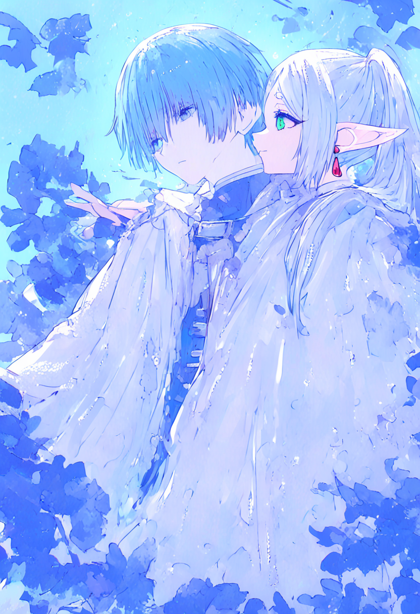
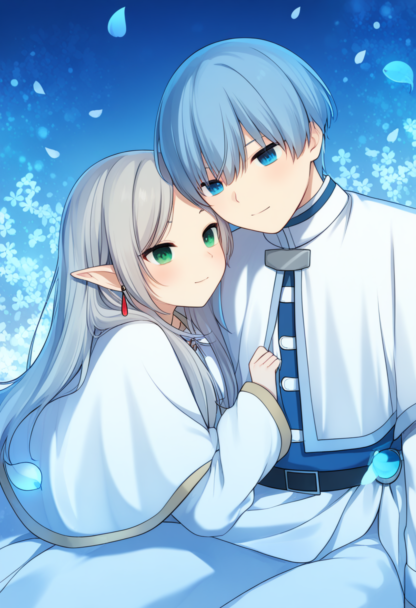

作業 05
| 總分 | 完成後打勾 | 配分 | 分項描述 |
|---|---|---|---|
| 4 | Simple baseline - 完成ComfyUI建置 | ||
| 4 | Medium baseline - 完成芙莉蓮文生圖 | ||
| 2 | Strong baseline - 替換模型完成辛梅爾文生圖 | ||
| -10 | 沒有寫100字心得 |

832 * 1216
Positive: masterpiece, best quality, ultra-detailed, 8k, anime illustration, 2people, 1boy, 1girl Close-up, focused shot on the tender and intimate embrace between the two characters, Himmel and Frieren, as they sit and rest together in peaceful repose Himmel (left) light blue short hair, bangs, blue eyes, gentle smile, large cream cloak, silver cloak clasp, blue high-collar tunic, white horizontal front clasps, white trim, white pants, black belt, black boots with white bands and is sleeping peacefully with his eyes gently closed in a calm, serene smile, his head leaning and resting softly on Frieren's shoulder and upper arm. He is relaxed and nestled against her. He wears his classic hero's tunic with the distinctive blue-green and white trim and cross pattern, and his white cloak is draped over his shoulders. Frieren (right) has long, pale lavender hair pulled into a loose ponytail, her distinct pointed elf ears are prominent, and her signature red drop earring is clearly visible. Her emerald green eyes are open, looking gently ahead with a contemplative yet tender expression. She wears her detailed white mage robe with gold trim, metal buckles, and blue-green collar accents. Her hands are resting at her side, and her form is nestled against Himmel. They are seated close together, Frieren's body is slightly turned towards Himmel, and his body is fully leaning against her, creating a quiet, affectionate space. Frieren's knees are slightly drawn up. The background is a pure, minimalist clean white void, creating an ethereal space. Delicate, softly-colored (light pinks, yellows, teals, blues) flower petals and leaves are gently floating and scattered around them in a soft flurry. The lighting is soft and even, highlighting their features. The style is defined by soft, delicate, and clean line art with transparent, water-colored layer coloring, primarily using teal-blues, whites, and pale skin tones. The overall feeling is one of quiet, affectionate peace and nostalgia.
Negative : NO NSFW, worst quality, lowres, bad anatomy, bad hands, text, error, missing fingers, extra digit, fewer digits, cropped, worst quality, low quality, normal quality, jpeg artifacts, signature, watermark, username, blurry, bad proportions, extra limbs, disfigured, ugly, gross proportions, malformed limbs, missing arms, missing legs, extra arms, extra legs, mutated hands, fused fingers, too many fingers, long neck, bad face, bad eyes, bad mouth, bad nose, bad ears, bad hair, bad clothing, bad background

LoRA連結1
LoRA連結2
832 * 1216
LoRA1 Strength : 0.5
LoRA2 Strength : 0.5
Positive: masterpiece, best quality, ultra-detailed, 8k, anime illustration, 2people, 1boy, 1girl Close-up, focused shot on the tender and intimate embrace between the two characters, Himmel and Frieren, as they sit and rest together in peaceful repose Himmel (left) light blue short hair, bangs, blue eyes, gentle smile, large cream cloak, silver cloak clasp, blue high-collar tunic, white horizontal front clasps, white trim, white pants, black belt, black boots with white bands and is sleeping peacefully with his eyes gently closed in a calm, serene smile, his head leaning and resting softly on Frieren's shoulder and upper arm. He is relaxed and nestled against her. He wears his classic hero's tunic with the distinctive blue-green and white trim and cross pattern, and his white cloak is draped over his shoulders. Frieren (right) has long, pale lavender hair pulled into a loose ponytail, her distinct pointed elf ears are prominent, and her signature red drop earring is clearly visible. Her emerald green eyes are open, looking gently ahead with a contemplative yet tender expression. She wears her detailed white mage robe with gold trim, metal buckles, and blue-green collar accents. Her hands are resting at her side, and her form is nestled against Himmel. They are seated close together, Frieren's body is slightly turned towards Himmel, and his body is fully leaning against her, creating a quiet, affectionate space. Frieren's knees are slightly drawn up. The background is a pure, minimalist clean white void, creating an ethereal space. Delicate, softly-colored (light pinks, yellows, teals, blues) flower petals and leaves are gently floating and scattered around them in a soft flurry. The lighting is soft and even, highlighting their features. The style is defined by soft, delicate, and clean line art with transparent, water-colored layer coloring, primarily using teal-blues, whites, and pale skin tones. The overall feeling is one of quiet, affectionate peace and nostalgia.
Negative : NO NSFW, worst quality, lowres, bad anatomy, bad hands, text, error, missing fingers, extra digit, fewer digits, cropped, worst quality, low quality, normal quality, jpeg artifacts, signature, watermark, username, blurry, bad proportions, extra limbs, disfigured, ugly, gross proportions, malformed limbs, missing arms, missing legs, extra arms, extra legs, mutated hands, fused fingers, too many fingers, long neck, bad face, bad eyes, bad mouth, bad nose, bad ears, bad hair, bad clothing, bad background
